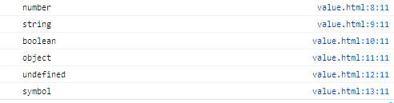
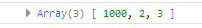

Js拥有6个原始数据类型：
number， string，boolean，null，undefined，symbol和一个对象类型Object判断对象类型的方法
typeof
typeof对于原始类型来说，除了 null 都可以显示正确的类型，而对null显示object1 | console.log(typeof 1 ) |

方法
typeof 对于对象来说，除了函数都会显示 object，因此 typeof 并不能准确判断变量到底是什么类型1 | console.log(typeof []) |
const Person = function() {}
const p1 = new Person()
console.log(p1 instanceof Person)
var str = ‘hello world’
console.log(str instanceof String )
var str1 = new String(‘hello world’)
console.log(str1 instanceof String)
1 |
|
let obj1 = [1,2,3]
let obj2 = obj1
obj2[0] = 1000
console.log(obj1)
`
在Vue中，子组件的
data定义为函数而非对象也是为了避免对象类型的这一特点